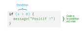
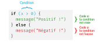
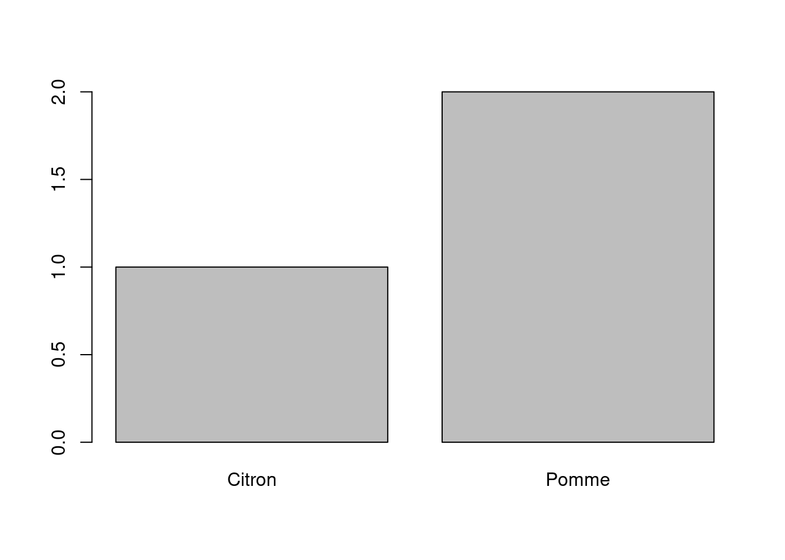
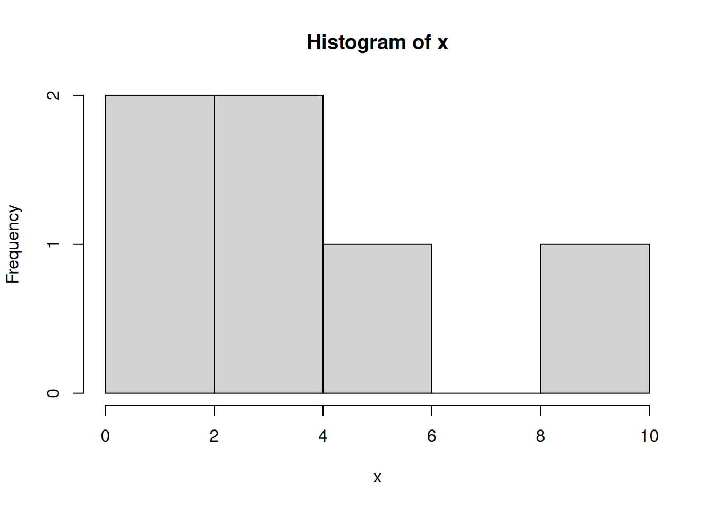
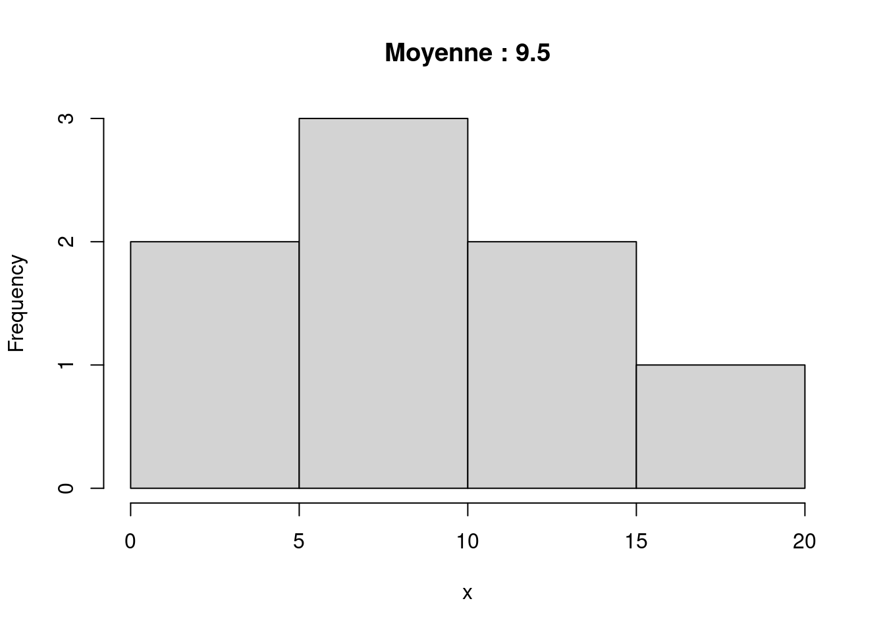
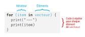
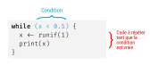

library(questionr)
data(hdv2003)
data(rp2018)17 Exécution conditionnelle et boucles
Nous avons vu précédemment comment écrire nos propres fonctions. Cette section présente des éléments du langage qui permettent de programmer des actions un peu plus complexes : exécuter du code de manière conditionnelle selon le résultat d’un test, et répéter des opérations avec des boucles.
Les notions décrites dans cette partie s’appliquent pour le développement de fonctions, mais peuvent aussi être mises en œuvre à tout moment dans un script.
On commence par charger les jeux de données d’exemple utilisés par la suite :
17.1 if et else : exécuter du code sous certaines conditions
17.1.1 if
L’instruction if permet de n’exécuter du code que si une condition est remplie.
if est suivie d’une condition (entre parenthèses) puis d’un bloc de code (entre accolades). Ce bloc de code n’est exécuté que si la condition est vraie.

Par exemple, dans le code suivant, le message Bonjour ! ne sera affiché que si la valeur de l’objet prenom vaut "Pierre-Edmond" :
prenom <- "Pierre-Edmond"
if (prenom == "Pierre-Edmond") {
message("Bonjour !")
}
#> Bonjour !On peut utiliser ce code pour créer une passionnante fonction qui a pour objectif de ne dire bonjour qu’aux personnes qui s’appellent Pierre-Edmond :
bonjour_pierre_edmond <- function(prenom) {
if (prenom == "Pierre-Edmond") {
message("Bonjour !")
}
}
bonjour_pierre_edmond("Pierre-Edmond")
#> Bonjour !
bonjour_pierre_edmond("Valérie-Charlotte")Une autre utilisation possible (et un peu plus utile) dans le cadre d’une fonction est de n’exécuter certaines instructions que si la valeur d’un argument vaut une valeur donnée. Dans l’exemple suivant, on n’applique la fonction round() que si l’argument arrondir vaut TRUE.
moyenne <- function(x, arrondir = TRUE) {
res <- mean(x)
if (arrondir == TRUE) {
res <- round(res)
}
res
}
v <- c(1.4, 2.3, 8.9)
moyenne(v)
#> [1] 4
moyenne(v, arrondir = FALSE)
#> [1] 4.2
Avertissement
On notera que le test x == TRUE est en fait redondant, car son résultat est le même que la valeur de x :
- si
xvautTRUE,x == TRUEvautTRUE - si
xvautFALSE,x == TRUEvautFALSE
On remplacera donc en général if (x == TRUE) par if (x).
De la même manière, on pourra remplacer if (x == FALSE) par if (!x).
Dans notre fonction moyenne ci-dessus, on peut donc remplacer :
if (arrondir == TRUE) {
res <- round(res)
}Par :
if (arrondir) {
res <- round(res)
}À noter également que quand le bloc de code qui suit une instruction if ne comporte qu’une seule instruction, on peut omettre les accolades qui l’entourent. Les syntaxe suivantes sont donc équivalentes :
if (arrondir) {
res <- round(res)
}
if (arrondir) res <- round(res)17.1.2 if / else
On utilise souvent if en le faisant suivre par une instruction else. else précède un autre bloc de code R qui ne s’exécute que si la condition donnée au if est fausse :

On peut ainsi utiliser if / else pour une nouvelle fonction fort utile qui nous évitera bien des désagréments météorologiques.
conseil_vestimentaire <- function(temperature) {
if (temperature > 15) {
message("La polaire n'est pas forcément nécessaire.")
} else {
message("Vous devriez prendre une petite laine.")
}
}
conseil_vestimentaire(-5)
#> Vous devriez prendre une petite laine.Plus utile, on peut l’utiliser pour effectuer deux actions différentes en fonction de la valeur d’un argument. La fonction suivante génère deux graphiques différents selon le type du vecteur passé en argument :
graph_var <- function(x) {
if (is.character(x)) {
barplot(table(x))
} else {
hist(x)
}
}
graph_var(c("Pomme", "Pomme", "Citron"))
graph_var(c(1, 5, 10, 3, 1, 4))
17.1.3 “if” / “else if” / “else”
Une possibilité complémentaire est d’ajouter des blocs else if qui permettent d’ajouter des conditions supplémentaires. Dès qu’une condition est vraie, le bloc de code correspondant est exécuté. Le dernier bloc else est exécuté si aucune des conditions n’est vraie.
On peut donc améliorer encore notre fonction graph_var() pour tester plusieurs types explicitement et afficher un message si aucun type géré n’a été reconnu.
graph_var <- function(x) {
if (is.character(x)) {
barplot(table(x))
} else if (is.numeric(x)) {
hist(x)
} else {
message("Le type de x n'est pas géré par la fonction")
}
}
graph_var(c(TRUE, FALSE, TRUE))
#> Le type de x n'est pas géré par la fonctionAttention, seul le bloc de la première condition vraie est exécuté, l’ordre des conditions est donc important. Dans l’exemple suivant, le second bloc n’est jamais exécuté et donc le second message jamais affiché.
test_x <- function(x) {
if (x < 100) {
message("x est inférieur à 100")
} else if (x < 10) {
message("x est inférieur à 10")
}
}
test_x(5)
#> x est inférieur à 100Il est donc important d’ordonner les conditions de la plus spécifique à la plus générale.
17.1.4 Construction de conditions complexes
On peut combiner plusieurs tests avec les opérateurs logiques classiques :
&&est l’opérateur “et”, qui est vrai si les deux conditions qu’il réunit sont vraies||est l’opérateur “ou”, qui est vrai si au moins l’une des deux conditions qu’il réunit sont vraies!est l’opérateur “not”, qui teste si la condition qu’il précède est fausse
Ainsi, si on veut qu’une variable temperature soit comprise entre 15 et 25, on écrira :
verifie_temperature <- function(temperature) {
if (temperature >= 15 && temperature <= 25) {
message("Température ok")
}
}
verifie_temperature(20)Si on souhaite tester que temperature est inférieure à 15 ou supérieure à 25 :
verifie_temperature <- function(temperature) {
if (temperature < 15 || temperature > 25) {
message("Température pas glop")
}
}
verifie_temperature(10)Si on veut tester si temperature vaut NULL, on peut utiliser is.null().
verifie_temperature <- function(temperature = NULL) {
if (is.null(temperature)) {
message("Merci d'indiquer une température")
}
}
verifie_temperature()Mais si à l’inverse on veut tester si temperature n’est pas NULL, on inverse le test précédent en utilisant !.
verifie_temperature <- function(temperature = NULL) {
if (!is.null(temperature)) {
message("Merci d'avoir indiqué une température")
}
}
verifie_temperature(15)On pourra noter qu’il existe deux types d’opérateurs “et” et “ou” dans R :
- Les opérateurs simples
&et|sont des opérateurs vectorisés. Ils peuvent s’appliquer à des vecteurs et retourneront un vecteur deTRUEetFALSE. - Les opérateurs doubles
&&et||ne peuvent retourner qu’une seule valeur, et si on leur fournit des vecteurs ils n’utiliseront que la première valeur de chacun d’entre eux.
x <- 1:5
x > 0 & x <= 2
#> [1] TRUE TRUE FALSE FALSE FALSE
x > 0 && x <= 2
#> Warning in x > 0 && x <= 2: 'length(x) = 5 > 1' in coercion to 'logical(1)'
#> Warning in x > 0 && x <= 2: 'length(x) = 5 > 1' in coercion to 'logical(1)'
#> [1] TRUEQuand on passe un test à un if, celui-ci est censé retourner une unique valeur TRUE ou FALSE. Une erreur fréquente, notamment quand on est dans une fonction, est de passer à if une condition appliquée à un vecteur. Dans ce cas R a la bonne idée d’afficher une erreur1.
superieur_a_5 <- function(x) {
if (x >= 5) {
message(">=5")
}
}
superieur_a_5(1:10)
#> Error in if (x >= 5) {: the condition has length > 1
Avertissement
À retenir : quand on utilise l’instruction if, la condition qui lui est passée entre parenthèses ne doit renvoyer qu’une seule valeur TRUE ou FALSE. Si on utilise une condition complexe, on utilisera donc plutôt les opérateurs doubles && et ||.
17.1.5 Différence entre if / else et ifelse
Une source fréquente de confusion concerne la différence entre les instructions if / else et la fonction ifelse() de R base (ou son équivalent if_else() de dplyr, voir Section 9.4.1). Les deux sont pourtant très différentes :
if/elses’utilisent quand on teste une seule condition et qu’on veut exécuter des blocs de code différents selon son résultatifelseapplique un test à tous les éléments d’un vecteur et retournent un vecteur dont les éléments dépendent du résultat de chaque test
Premier cas de figure : un objet x contient une seule valeur et on veut afficher un message différent selon si celle-ci est inférieure ou supérieure à 10. Dans ce cas on utilise if / else.
x <- 5
if (x >= 10) {
message(">=10")
} else {
message("<10")
}
#> <10Deuxième cas de figure : x est un vecteur et on souhaite recoder chacune de ses valeurs selon le même critère que ci-dessus. Dans ce cas on utilise ifelse.
x <- 5:15
x_rec <- ifelse(x >= 10, ">=10", "<10")
x_rec
#> [1] "<10" "<10" "<10" "<10" "<10" ">=10" ">=10" ">=10" ">=10" ">=10"
#> [11] ">=10"17.2 Contrôle de l’exécution et gestion des erreurs
L’instruction if est souvent utilisée dans des fonctions pour valider les valeurs passées en arguments, ou plus généralement pour contrôler que l’exécution du code se déroule comme prévu.
17.2.1 Utilisation de return pour sortir de la fonction
On peut utiliser un return pour interrompre l’exécution de la fonction et retourner un résultat. On a en effet vu Section 14.2.5 que dès que R rencontre un return dans une fonction, il interrompt immédiatement l’exécution de celle-ci.
La fonction suivante retourne la longueur du mot le plus long dans un vecteur de chaînes de caractères.
longueur_max <- function(x) {
max(nchar(x))
}
longueur_max(c("Pomme", "Pamplemousse"))
#> [1] 12Cette fonction n’a pas trop de sens si on lui passe en entrée un vecteur qui n’est pas un vecteur de chaînes de caractères. On peut donc rajouter un test qui, si x n’est pas de type character, retourne directement la valeur NA.
longueur_max <- function(x) {
if (!is.character(x)) {
return(NA)
}
max(nchar(x))
}
longueur_max(1:5)
#> [1] NA17.2.2 warning
La fonction warning fonctionne comme message mais permet d’afficher un avertissement. Celui-ci est présenté un peu différemment dans la console de manière à attirer l’attention, et il indique quelle fonction a déclenché l’avertissement, ce qui peut être utile pour retrouver l’origine du problème.
Dans la fonction précédente, on peut ajouter un avertissement dans le cas où le vecteur passé en argument n’est pas de type character.
longueur_max <- function(x) {
if (!is.character(x)) {
warning("x n'est pas de type character, le résultat vaut NA.")
return(NA)
}
max(nchar(x))
}
longueur_max(1:5)
#> Warning in longueur_max(1:5): x n'est pas de type character, le résultat vaut
#> NA.
#> [1] NA17.2.3 stop et stopifnot
stop fonctionne comme warning mais déclenche une erreur qui interrompt totalement l’exécution du code. Quand R le rencontre dans une fonction, il sort immédiatement de la fonction, ne retourne aucun résultat, et il interrompt également toutes les autres instructions en attente d’exécution.
On peut ainsi considérer, toujours dans la fonction longueur_max, que le fait de ne pas fournir en argument un vecteur de type character est suffisamment “grave” pour interrompre l’exécution en cours et forcer la personne qui utilise la fonction à régler le problème.
longueur_max <- function(x) {
if (!is.character(x)) {
stop("x doit être de type character.")
}
max(nchar(x))
}
longueur_max(1:5)
#> Error in longueur_max(1:5): x doit être de type character.
Note
Savoir si un problème doit être traité comme un avertissement ou comme une erreur relève du choix de la personne qui développe la fonction : chaque cas est particulier.
stopifnot est une syntaxe alternative plus compacte qui combine test et message d’erreur. On lui passe en premier argument une condition, et en deuxième argument un message à afficher si la condition est fausse.
On peut donc réécrire notre fonction longueur_max ci-dessus de la manière suivante :
longueur_max <- function(x) {
stopifnot(is.character(x))
max(nchar(x))
}
longueur_max(1:5)
#> Error in longueur_max(1:5): is.character(x) is not TRUESi on souhaite un message d’erreur personnalisé il faut le passer comme nom de la condition.
longueur_max <- function(x) {
stopifnot(
"x doit être de type character" = is.character(x)
)
max(nchar(x))
}
longueur_max(1:5)
#> Error in longueur_max(1:5): x doit être de type character17.2.4 Tester la présence d’un argument facultatif
On a vu Section 14.2.3 que pour rendre un argument de fonction “facultatif”, on doit lui attribuer une valeur par défaut. Parfois cependant, on n’a pas de valeur par défaut évidente à lui attribuer directement : dans ce cas on lui attribue la valeur NULL et on utilise un if() dans la fonction pour déterminer s’il a été défini ou non par l’utilisateur.
Par exemple, soit une fonction qui génère un graphique avec un argument titre qui permet de définir son titre.
histo <- function(x, titre) {
hist(x, main = titre)
}Si l’utilisateur ne donne pas de titre, on souhaite ajouter un titre qui indique la valeur de la moyenne de la variable représentée. Dans ce cas on attribue à titre la valeur par défaut NULL, et on vérifie dans le corps de la fonction que l’utilisateur n’a pas fourni de valeur avec if (is.null(titre)). On peut alors calculer la valeur “par défaut” souhaitée :
histo <- function(x, titre = NULL) {
if (is.null(titre)) {
titre <- paste("Moyenne :", mean(x))
}
hist(x, main = titre)
}x <- c(1, 15, 8, 10, 12, 18, 8, 4)
histo(x)
histo(x, titre = "Quel bel histogramme")17.3 for et while : répéter des instructions dans une boucle
Les boucles permettent de répéter du code plusieurs fois, soit en fonction d’une condition soit selon les éléments d’un vecteur2.
17.3.1 for
Le premier type de boucle est défini par l’instruction for. Sa structure est la suivante :

Le principe est le suivant : on fournit à for entre parenthèses une expression du type item in vecteur, puis un bloc de code entre accolades. for va exécuter le bloc de codes pour chacune des valeurs de vecteur, et affectera tour à tour à item la valeur courante de vecteur.
Prenons tout de suite un exemple pour mieux comprendre.
for (item in 1:5) {
print(item)
}
#> [1] 1
#> [1] 2
#> [1] 3
#> [1] 4
#> [1] 5Ici notre vecteur “source” est constitué des entiers de 1 à 5. for va donc exécuter l’instruction print(item) 5 fois, en remplaçant la première fois item par 1, la seconde fois par 2, etc.
On peut itérer sur différents types d’objets, et le nom item peut être remplacé par ce que l’on souhaite :
for (prenom in c("Pierre-Edmond", "Valérie-Charlotte")) {
message("Bonjour ", prenom, " !")
}
#> Bonjour Pierre-Edmond !
#> Bonjour Valérie-Charlotte !Exemple un peu plus complexe, la fonction suivante prend en entrée un tableau de données et un vecteur de noms de variables, et affiche le résultat de summary pour chacune de ces variables.
summaries <- function(d, vars) {
for (var in vars) {
message("--- ", var, " ---")
print(summary(d[, var]))
}
}
summaries(hdv2003, c("sexe", "age", "heures.tv"))
#> --- sexe ---
#> Homme Femme
#> 899 1101
#> --- age ---
#> Min. 1st Qu. Median Mean 3rd Qu. Max.
#> 18.00 35.00 48.00 48.16 60.00 97.00
#> --- heures.tv ---
#> Min. 1st Qu. Median Mean 3rd Qu. Max. NA's
#> 0.000 1.000 2.000 2.247 3.000 12.000 5Parfois on souhaite itérer sur les éléments par leur position plutôt que par leur valeur. Dans l’exemple suivant, la fonction affiche_dimensions affiche le nombre de lignes et de colonnes des tableaux de données contenus dans une liste :
affiche_dimensions <- function(dfs) {
for (df in dfs) {
message("Dimensions : ", nrow(df), "x", ncol(df))
}
}
l <- list(
hdv = hdv2003,
rp = rp2018
)
affiche_dimensions(l)
#> Dimensions : 2000x20
#> Dimensions : 5417x62Si on souhaite afficher le nom du tableau en plus de ses dimensions afin de rendre les résultats plus lisibles, on doit itérer sur la position des éléments pour pouvoir récupérer à la fois leur nom (dans names(dfs)) et leur valeur (dans dfs). Dans ces cas-là on peut utiliser la fonction seq_along() qui génère une liste d’entiers correspondant au nombre d’éléments de l’objet qu’on lui passe en argument.
x <- c("rouge", "vert", "bleu")
seq_along(x)
#> [1] 1 2 3On peut du coup réécrire affiche_dimensions de la façon suivante.
affiche_dimensions <- function(dfs) {
for (i in seq_along(dfs)) {
name <- names(dfs)[[i]]
df <- dfs[[i]]
message("Dimensions de ", name, " : ", nrow(df), "x", ncol(df))
}
}
affiche_dimensions(l)
#> Dimensions de hdv : 2000x20
#> Dimensions de rp : 5417x62
Note
Il est assez naturel d’utiliser for (i in 1:length(x)) plutôt que for (i in seq_along(x)). L’utilisation de seq_along(x) est cependant préférable, notamment lorsqu’on est dans une fonction, car elle n’essaie pas d’exécuter le bloc de code si jamais x est de longueur nulle.
En effet, si length(x) vaut 0 alors 1:length(x) vaut 1:0, c’est-à-dire le vecteur c(1, 0), ce qui signifie que la boucle sera exécutée et risque de générer une erreur. De son côté, seq_along(x) garantit dans ces cas-là qu’aucune itération du for n’est exécutée.
À noter que quand on sort d’une boucle for, l’objet utilisé pour itérer sur les valeurs du vecteur existe toujours, et contient la dernière valeur qu’il a prise.
for (i in 1:3) {
print("a")
}
#> [1] "a"
#> [1] "a"
#> [1] "a"
print(i)
#> [1] 317.3.2 while
while prend en argument une condition et est suivi d’un bloc de code entre accolades. Elle exécute le bloc tant que la condition est vraie :

Par exemple, la fonction suivante simule un tirage à pile ou face à l’aide de la fonction sample(). La simulation de tirage s’exécute et affiche le résultat tant qu’on obtient “Pile” (et interrompt la boucle au premier “Face”) :
resultat <- ""
while (resultat != "Face") {
resultat <- sample(c("Pile", "Face"), size = 1)
print(resultat)
}[1] "Pile"
[1] "Pile"
[1] "Face"Le déroulement de la boucle est le suivant :
- la première instruction initialise la valeur de la variable
resultatavec une chaîne vide - à la première entrée dans le
while,resultatvaut"", elle est donc différente de"Face"et le bloc de code est donc exécuté - à la fin de cette exécution,
resultatvaut soit"Pile"soit"Face". On entre alors une deuxième fois dans lewhile. Siresultatvaut"Pile", la condition duwhilen’est pas vraie, on n’exécute donc pas le bloc de code et on sort de la boucle. Siresultatvaut"Face", la condition est vraie, on exécute le bloc de code et on rentre ensuite une troisième fois dans lewhile, etc.
17.3.3 next et break
Les instructions next et break permettent de modifier les itérations d’une boucle for ou while.
next permet de sortir de l’itération courante et de passer directement à l’itération suivante sans exécuter le reste du code.
Reprenons la fonction summaries, vue plus haut, qui affiche le résumé de plusieurs variables d’un tableau de données.
summaries <- function(d, vars) {
for (var in vars) {
message("--- ", var, " ---")
print(summary(d[, var]))
}
}
summaries(hdv2003, c("sexe", "age"))
#> --- sexe ---
#> Homme Femme
#> 899 1101
#> --- age ---
#> Min. 1st Qu. Median Mean 3rd Qu. Max.
#> 18.00 35.00 48.00 48.16 60.00 97.00Si on passe à la fonction un nom de colonne qui n’existe pas, on obtient une erreur et les autres variables ne sont pas affichées.
summaries(hdv2003, c("sexe", "igloo", "age"))
#> --- sexe ---
#> Homme Femme
#> 899 1101
#> --- igloo ---
#> Error in `[.data.frame`(d, , var): undefined columns selectedOn pourrait dans ce cas vouloir afficher les résultats pour les “bonnes” colonnes, et ignorer les autres. C’est possible si on ajoute une instruction next quand la valeur courante de var ne fait pas partie des noms de colonnes (on pourrait aussi ajouter un warning() juste avant le next pour informer l’utilisateur).
summaries <- function(d, vars) {
for (var in vars) {
if (!(var %in% names(d))) {
next
}
message("--- ", var, " ---")
print(summary(d[, var]))
}
}
summaries(hdv2003, c("sexe", "igloo", "age"))
#> --- sexe ---
#> Homme Femme
#> 899 1101
#> --- age ---
#> Min. 1st Qu. Median Mean 3rd Qu. Max.
#> 18.00 35.00 48.00 48.16 60.00 97.00L’instruction break est un peu plus radicale : non seulement elle sort de l’itération courante sans exécuter la suite du code, mais elle interrompt carrément la boucle toute entière et n’exécute pas les itérations restantes.
Dans l’exemple précédent, si on remplace next par break, on voit bien qu’on sort de la boucle et que seule la première itération est totalement exécutée.
summaries <- function(d, vars) {
for (var in vars) {
if (!(var %in% names(d))) {
break
}
message("--- ", var, " ---")
print(summary(d[, var]))
}
}
summaries(hdv2003, c("sexe", "igloo", "age"))
#> --- sexe ---
#> Homme Femme
#> 899 110117.3.4 Quand (ne pas) utiliser des boucles
Le mécanisme des boucles, assez intuitif, peut être utilisé pour beaucoup d’opérations. Il y a cependant sous R des alternatives souvent plus rapides, qu’il est préférable de privilégier.
Avant tout, de nombreuses fonctions R sont “vectorisées” et s’appliquent directement à tous les éléments d’un vecteur. Dans le cas où une fonction vectorisée existe déjà, elle propose en général une syntaxe plus compacte et une exécution (beaucoup) plus rapide.
Pour prendre un exemple caricatural, si on souhaite ajouter 10 à chaque élément d’un vecteur on évitera absolument de faire :
for (i in seq_along(x)) {
x[i] <- x[i] + 10
}Et on se contentera d’un beaucoup plus simple x + 10.
Autre exemple, si on souhaite remplacer dans tous les éléments d’un vecteur de chaînes de caractères le caractère “X” par le caractère “o”, on pourrait être tenter de faire une boucle du type :
mots <- c("brXuette", "mXtX", "iglXX")
for (i in seq_along(mots)) {
mots[i] <- str_replace_all(mots[i], "X", "o")
}Or c’est tout à fait inutile car str_replace_all() étant vectorisée, on peut l’appliquer directement à un vecteur sans utiliser de boucle.
mots <- str_replace_all(mots, "X", "o")Dernier exemple, la boucle suivante remplace les valeurs manquantes d’un vecteur par les valeurs correspondantes d’un deuxième vecteur.
x <- c(1, NA, 4, 110, NA)
y <- c(20, 30, 40, 50, 60)
for (i in seq_along(x)) {
if (is.na(x[i])) {
x[i] <- y[i]
}
}Cette boucle sera avantageusement remplacée par une utilisation plus compacte et plus rapide de l’opérateur [].
x[is.na(x)] <- y[is.na(x)]En dehors des questions de performance, une boucle peut aussi être moins lisible que certaines alternatives. Soit la fonction suivante, qui prend en entrée un vecteur de mots et retourne le nombre total de voyelles qu’il contient.
library(stringr)
n_voyelles <- function(mots) {
nb <- str_count(mots, "[aeiou]")
sum(nb)
}
n_voyelles(c("le", "chat", "roupille"))
#> [1] 6Supposons qu’on souhaite appliquer cette fonction à une série de vecteurs de mots contenus dans une liste. On pourrait utiliser une boucle for parcourant cette liste, appliquant la fonction, et ajoutant le résultat à un vecteur numérique vide préalablement créé avec numeric().
phrases <- list(
c("le", "chat", "roupille"),
c("l'autre", "chat", "roupille", "aussi")
)
res <- numeric()
for (i in seq_along(phrases)) {
res[i] <- n_voyelles(phrases[[i]])
}
res
#> [1] 6 11On verra cependant Chapitre 18 que des fonctions permettent de faire ce genre de choses de manière beaucoup plus simple et plus lisible. Ici par exemple on obtiendrait le même résultat avec un simple :
phrases %>% map_int(n_voyelles)
#> [1] 6 11Au final, entre les fonctions vectorisées existantes et les possibilités fournies par purrr, il est assez rare de devoir utiliser une boucle directement dans R. Pour autant, il ne faut pas non plus tomber dans l’excès inverse et considérer que tout usage de for ou while doit être évité : ces fonctions sont parfaitement justifiées dans certains cas de figure, et si vous trouvez une solution qui fonctionne de manière efficace avec une boucle for, il n’est pas forcément utile de chercher à la remplacer.
17.4 Ressources
L’ouvrage R for Data Science (en anglais), accessible en ligne, contient un chapitre sur les boucles for, et un chapitre sur les blocs if / else.
L’ouvrage Advanced R (également en anglais) aborde de manière approfondie les tests et les boucles.
Sur le blog de ThinkR, un article détaillé sur l’utilisation des boucles et les alternatives possibles.
Sur le blog de Florian Privé, un billet approfondi sur les raisons pour lesquelles les boucles peuvent être lentes et sur les cas où il est préférable de ne pas les utiliser.
17.5 Exercices
17.5.1 if et else
Exercice 1.1
Écrire une fonction gel qui prend un argument nommé temperature et effectue les actions suivantes :
- si
temperatureest négative, affiche le message “ça gèle” avec la fonctionmessage() - sinon, affiche le message “ça gèle pas” avec la fonction
message()
gel <- function(temperature) {
if (temperature <= 0) {
message("ça gèle")
} else {
message("ça gèle pas")
}
}Exercice 1.2
Écrire une fonction meteo qui prend un argument nommé temperature et effectue les actions suivantes :
- si
temperatureest inférieure à 0, affiche le message “ça caille” avec la fonctionmessage() - si
temperatureest comprise entre 0 et 15, affiche le message “fais pas chaud” - si
temperatureest comprise entre 15 et 30, affiche le message “on est pas mal” - si
temperatureest supérieure à 30, affiche le message “tous à Miribel”
meteo <- function(temperature) {
if (temperature < 0) {
message("ça caille")
} else if (temperature < 15) {
message("fais pas chaud")
} else if (temperature < 30) {
message("on est pas mal")
} else {
message("tous à Miribel")
}
}
# Ou bien
meteo <- function(temperature) {
if (temperature < 0) {
message("ça caille")
}
if (temperature >= 0 && temperature < 15) {
message("fais pas chaud")
}
if (temperature >= 15 && temperature < 30) {
message("on est pas mal")
}
if (temperature >= 30) {
message("tous à Mriribel")
}
}Exercice 1.3
Écrire une fonction avertissement qui prend deux arguments pluie et parapluie et qui effectue les opérations suivantes :
- si
pluievautTRUEetparapluievautFALSE, affiche “mouillé” avec la fonctionmessage() - si
pluievautTRUEetparapluievautTRUE, affiche “bien vu” - si
pluievautFALSE, affiche “RAS”
avertissement <- function(pluie, parapluie) {
if (pluie && !parapluie) {
message("mouillé")
}
if (pluie && parapluie) {
message("bien vu")
}
if (!pluie) {
message("RAS")
}
}17.5.2 Contrôle de l’exécution
Exercice 2.1
Créer une fonction moyenne_arrondie, qui prend en argument un vecteur x et un argument facultatif decimales. La fonction doit effectuer les opérations suivantes :
- calculer la moyenne du vecteur
- si
decimalesest défini, arrondir la moyenne au nombre de décimales correspondant avec la fonctionround() - retourner le résultat
moyenne_arrondie <- function(x, decimales = NULL) {
moyenne <- mean(x)
if (!is.null(decimales)) {
moyenne <- round(moyenne, decimales)
}
moyenne
}Exercice 2.2
Créer une fonction etendue qui retourne la différence entre la plus grande et la plus petite valeur d’un vecteur.
etendue <- function(x) {
max(x) - min(x)
}Modifier la fonction pour qu’elle retourne NA si le vecteur passé en argument n’est pas numérique.
etendue <- function(x) {
if (!is.numeric(x)) {
return(NA)
}
max(x) - min(x)
}Modifier à nouveau la fonction pour qu’elle affiche un avertissement avant de renvoyer la valeur NA.
etendue <- function(x) {
if (!is.numeric(x)) {
warning("x doit être numérique")
return(NA)
}
max(x) - min(x)
}Exercice 2.3
Créer une fonction proportion qui prend en argument un vecteur et retourne les valeurs de ce vecteur divisée par leur somme.
proportion <- function(x) {
x / sum(x)
}Essayer d’exécuter proportion(c(-2, 1, 1)). Pourquoi obtient-on ce résultat ?
Comme la somme des éléments du vecteur vaut 0, lorsqu’on divise chaque élément par cette valeur on obtient l’infini (Inf), soit négatif soit positif selon le signe de l’élément divisé.
Modifier la fonction pour qu’elle retourne un message d’erreur si la somme des éléments du vecteur vaut 0.
proportion <- function(x) {
if (sum(x) == 0) {
stop("la somme des éléments de x vaut zéro")
}
x / sum(x)
}17.5.3 Boucles
Exercice 3.1
Charger le jeu de données hdv2003 de l’extension questionr avec :
library(questionr)
data(hdv2003)À l’aide d’une boucle for, parcourir les noms des variables de hdv2003. Si la variable en question est numérique, faire l’histogramme de la variable avec la fonction hist().
for (name in names(hdv2003)) {
variable <- hdv2003[, name]
if (is.numeric(variable)) {
hist(variable)
}
}Ajouter le nom de la variable comme titre du graphique en utilisant l’argument main de hist().
for (name in names(hdv2003)) {
variable <- hdv2003[, name]
if (is.numeric(variable)) {
hist(variable, main = name)
}
}Exercice 3.2
La fonction readline() permet de lire une chaîne de caractère saisie au clavier de la manière suivante :
reponse <- readline("Quelle est votre réponse ?")Écrire le code qui effectue les opérations suivantes :
- Afficher le message “Quel est le plus grand sociologue de tous les temps ?” et demander la réponse à l’utilisateur
- Si la réponse saisie est “Tonton Michel”, afficher “Bingo !”
- Sinon, afficher “Nope”
reponse <- readline("Quel est le plus grand sociologue de tous les temps ?")
if (reponse == "Tonton Michel") {
message("Bingo !")
} else {
message("Nope !")
}À l’aide d’une boucle while(), modifier le code précédent pour que la question soit répétée jusqu’à ce que l’utilisateur saisisse “Tonton Michel”.
reponse <- ""
while (reponse != "Tonton Michel") {
reponse <- readline("Quel est le plus grand sociologue de tous les temps ?")
if (reponse == "Tonton Michel") {
message("Bingo !")
} else {
message("Nope !")
}
}Exercice 3.3
À l’aide d’une boucle for, écrire une fonction somme_positifs qui prend en argument un vecteur et retourne la somme de tous les nombres positifs qu’il contient.
somme_positifs <- function(x) {
somme <- 0
for (item in x) {
if (item > 0) {
somme <- somme + item
}
}
somme
}Réécrire cette fonction pour qu’elle retourne le même résultat mais sans utiliser de boucle.
somme_positifs <- function(x) {
sum(x[x > 0])
}Exercice 3.4
En utilisant une boucle for, créer une fonction somme_premiers_positifs qui prend en argument un vecteur et retourne la somme de tous les nombres positifs qu’il contient en partant du début du vecteur et en s’arrêtant au premier élément négatif (on pourra recopier et modifier la première fonction somme_positifs de l’exercice précédent).
somme_premiers_positifs <- function(x) {
somme <- 0
for (item in x) {
if (item < 0) {
break
}
somme <- somme + item
}
somme
}Facultatif : réécrire la fonction pour qu’elle retourne le même résultat sans utiliser de boucle for.
somme_premiers_positifs <- function(x) {
negatifs <- which(x < 0)
if (length(negatifs) == 0) {
return(sum(x))
}
premier_negatif <- min(negatifs)
sum(head(x, premier_negatif - 1))
}Exercice 3.5
Soit la fonction pile_ou_face suivante, qui simule un jet de pièce :
pile_ou_face <- function() {
alea <- runif(1)
if (alea < 0.5) {
result <- "pile"
} else {
result <- "face"
}
result
}Modifier cette fonction en utilisant une boucle for pour qu’elle accepte un argument n et retourne un vecteur comprenant le résultat de n tirages.
pile_ou_face(4)
#> [1] "face" "pile" "face" "pile"pile_ou_face <- function(n) {
tirages <- character()
for (i in seq_len(n)) {
alea <- runif(1)
if (alea < 0.5) {
tirages <- c(tirages, "pile")
} else {
tirages <- c(tirages, "face")
}
}
tirages
}Réécrire la fonction pour qu’elle retourne le même résultat sans utiliser de boucle for.
pile_ou_face <- function(n) {
alea <- runif(n)
result <- ifelse(alea < 0.5, "pile", "face")
result
}
# Ou bien, encore plus simple
pile_ou_face <- function(n) {
sample(c("pile", "face"), size = n, replace = TRUE)
}Pour les versions de R antérieures à la 4.2, seul un avertissement est affiché et R n’utilise alors que la première valeur du vecteur pour déterminer si le bloc de code doit être exécuté ou non.↩︎
En complément, on verra également Chapitre 18 d’autres fonctions tirées de l’extension
purrrqui permettent d’appliquer une fonction en itérant sur les éléments de plusieurs objets.↩︎